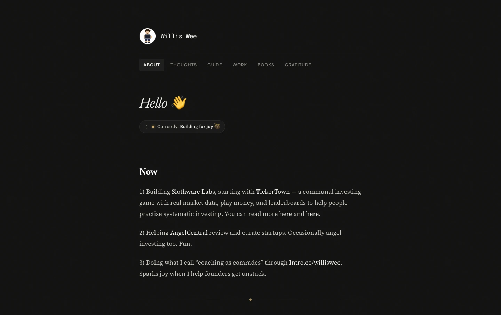
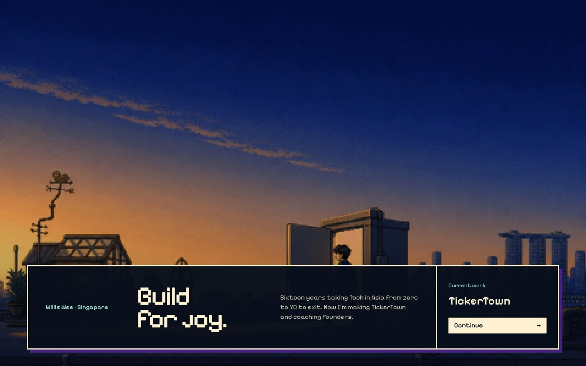
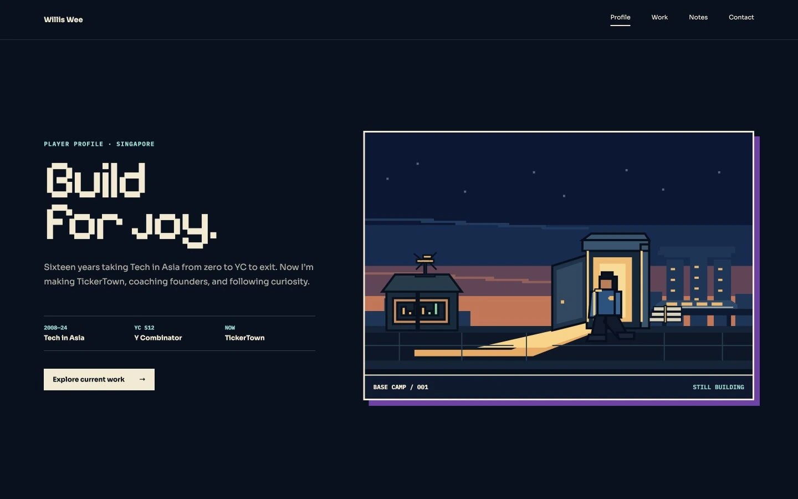
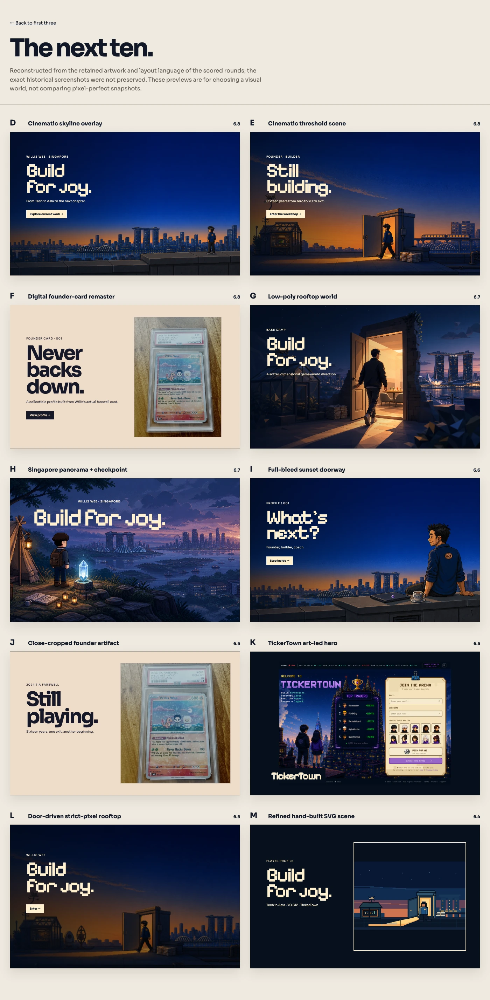

What I learned redesigning my site with AI
75 critic reviews, a return to an earlier design, and the objects from my life.
28 September 2026
I’ve been playing around with AI in my work, including design.1 After reading Anshu Chimala’s piece on turning AI into a better designer in Lenny’s Newsletter, I decided to try it on my personal site, williswee.com.2
I’d kept the previous version simple:

It worked. But I found it too text-heavy, and it didn’t really reflect the more playful side of me.
The redesign turned out like this:
I kept the homepage scannable. A reader can see who I am without reading the whole page. Each scroll opens the next section: work, notes, life, and connect.
Subjective, I know, but I love this art direction. There is less text, and the pictures include things from my life.3
Here’s how the process went, including the part where the AI got stuck in a loop. If you just want the takeaways, skip to the last section.
1. Finding a direction before fussing over details
I like pixel art, so that was my starting point. I wanted the site to feel like a series of stills from a video game, while still working as a personal website.
I adapted the prompt from Anshu’s article. Here’s a cleaned-up version:
Rebuild my personal site with a bold pixel-art theme and old-school game graphics. Study the current live site and repo to understand its content and information architecture.
Each section should feel like a still from a video game, while still functioning as part of a personal website. Make the artwork relevant to each section.
Follow this procedure:
1. Generate a long, random alphanumeric string using a shell script.
2. Use the string as inspiration for the creative direction: colour, layout, typography, and atmosphere. Look for patterns that spark ideas.
3. Use your judgment to bring the direction to life.
Don’t reveal the string in the design. It’s only for inspiration.
Start a local preview so I can review the result.At this stage, I wasn’t trying to get every detail right. I wanted the direction to look promising.
2. Using a design critic
Next, I asked the agent to improve the design with help from a separate critic.
The critic would get only a screenshot, in a fresh context. No code, implementation explanations, or earlier critiques. Just a reaction to what was actually on the screen.
Here’s the prompt, again adapted from Anshu’s article and lightly edited for readability. I requested 5.6 Sol Extra High as the critic. You can use any appropriate model available in your own setup.
I want you to improve this design. Use a 5.6 Sol Extra High subagent as a design critic.
Follow this procedure at each iteration:
- Capture a screenshot of the current design.
- Invoke the critic in a fresh context, with just the screenshot, not the code, implementation details, or earlier iterations and critiques.
- Ask it to evaluate the aesthetic the design is going for, imagine how a top design studio would execute it, and outline the biggest gaps.
- Ask for a score out of 10 indicating how close it is to that quality bar.
Give the critic this guidance:
- Consider both the overall structure and composition and the fine details.
- Watch for patterns that feel overdone, excessive, or obviously AI-generated, and penalize them.
- Give tight, specific feedback, not vague prose.
- Be bold and opinionated, rather than defaulting to what is safe or easy.
Your work is only complete when the critic independently scores the design 9/10 or higher. Do not tell the critic this stopping criterion. Use the same critic prompt each time.Scoring the designs was useful. But that last instruction on “scoring” was perhaps too open-ended.
My initial loop produced 75 completed critic reviews before I stopped it. That doesn’t mean 75 completely different websites. Some were refinements or variations. TBH, none of those reviews reached 9/10.
Here are a few saved directions from the exploration. These aren’t “iterations one, two, and three”; they show the different places it went.



A fresh design critic was useful, but its score wasn’t an objective measure of my taste. More iterations didn’t automatically mean the site was becoming more “me.”
3. Choosing a direction and sticking with it
Eventually, I sent this:
We are in an endless loop. Give me the top 3 scoring designs for my review. Once I pick one, we iterate on that version.Then:
Not great. Give me the next top 10 scores.These are the actual requests, with spelling and punctuation cleaned up.
The agent assembled comparison boards. Here’s the board with ten additional directions:

After comparing them, I went back to an earlier campsite version. Each scroll told another part of the story. The pixel art was closer to what I wanted, and the pictures included Singapore.
So I pointed the agent back to that version with a more specific brief. A shortened, cleaned-up version:
I think this version has promise.
Keep:
- The natural flow, with each scroll revealing another part of the story.
- The pixel-art direction and references to Singapore.
- The character mostly facing away, rather than emphasizing my face.
Improve:
- The readability and navigation.
- Remove irrelevant objects, such as the telescope and glowing crystal.
- Show my work more subtly.
- Keep the character consistent: T-shirt, shorts, and sneakers.
Stay with this version so we don’t go into an endless loop again.At some point, I gotta stop asking for another direction and start making the chosen one better.
4. Making the artwork feel like my life
Once I’d chosen the direction, I focused on the details that made it personal:
I usually wear a T-shirt, shorts, and sneakers.
I carry a white tote bag and a backpack.
I play tennis and enjoy snorkeling.
I love reading, writing, and ice cream.
My desk setup includes an Apple Studio Display, a Mac mini, and a MacBook in a vertical stand, in clamshell mode.
My family is my wife and our three daughters.
Annotations became especially useful here. Instead of asking vaguely for “more personality,” I pointed out what was wrong or missing.
Some actual examples, lightly cleaned up:
The sloth, tent, and tennis racket are cropped. Those are the details that show character!
Oh man.. Don’t use a candlestick chart.
I’m working on an Apple Studio Display, with a laptop in clamshell mode, standing vertically.
Add a snorkel set here. I love the sea. I love snorkeling.
Instead of a library, make the background nature: mountains and trees. I love nature.
Keep the books. I love reading, but also include an Amazon Kindle.These were separate annotations, not one giant prompt.
I also asked for stickers on the laptop: “#GSD,” sloth faces, a heart, and “Stay calm.” Small things. They are the stickers on my laptop.
This stage mattered more to me than another point on the critic’s score.
5. A good screenshot isn’t a finished website
Once the homepage felt right, we carried the direction into Thoughts, Guide, Work, Books, and Gratitude. I wanted the same look on every page, and I wanted to keep what each page already did.
Reading pages needed a quieter treatment. Books and Gratitude still needed their random picks, permalinks, and focus mode.
I used Impeccable to guide design critiques, audits, and refinement, alongside the agent’s browser testing and code checks.
We checked mobile layouts, enlarged text, contrast, reduced motion, image weight, and links. We also fixed the shuffle feedback on the status, made the focus-mode fade consistent, and added a way to keep reading without jumping back to the top.
This took several rounds.
Takeaway
For a personal site or landing page, I found this process useful. For a more complex product, I’d still want to map out the journeys and states first, using Figma, Paper, or whatever helps me think clearly. A good screen doesn’t automatically make a good experience as users move from A to B to C.
I think AI will get better at moving a person from one screen to the next. I’ll try it when it does.
There are also a few things I’d do differently next time:
Set a budget for the loop. I’d try a small batch, compare the results, and decide whether to continue. I’d also save each screenshot with its critique so I could check the shortlist later.
Experiment with the model pairing. I’d try a cheaper model for implementation and a stronger one for criticism, then reverse them. Compare notes and see which is a better fit.
Give the critic clearer criteria. “Studio quality” is vague. For this project, I cared about readability, coherent pixel art, recognisable details from my life, and a homepage that was easy to scan. I should have made those priorities more explicit.
Show references, not a style name. A rough wireframe, a mood board, or a few examples of what I like and dislike gives the agent a boundary.
For now, I’m happy the site shows my life instead of a generic game. Thanks for reading to the end.
1 Impeccable, Paper, and still Figma. Also ran a small fun experiment using TypeSafe Jev.
2 The whole redesign took me about 4 weeks. I was taking my time experimenting. In between, i also went for a 9-day silent meditation retreat.